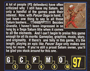

Panzer
Dragoon Saga Previews

A Gamepro
pereview of Panzer Dragoon Saga when the game was 50% complete.
Source:
Gamepro issue 112 January 1998
A Gamepro pereview
of Panzer Dragoon Saga when the game was 70% complete.
Source: Gamepro
issue 114 March 1998
An Electronic Gaming
Monthly pereview of Panzer Dragoon Saga when the game was 85% complete.
Source: EGM
issue 105 April 1998
A Gamefan preview of
Panzer Dragoon Saga when the game was thought to have 100 hours of gameplay.
Source: Gamefan
Vol. 5 Issue 12
Panzer
Dragoon Saga Reviews
An Electronic Gaming Monthly review of Panzer Dragoon Saga. The game recieved the editor's choice of EGM Gold. One editor even stated: "Yes I think it's even better than the almighty Final Fantasy Vll (blasphemy!)"
Source: EGM
issue 107 June 1998

A Classic Gameinformer
review of Panzer Dragoon Saga.
Source: Gameinformer
issue 140 December 2004
A Gamepro review of
Panzer Dragoon Saga. The reviewer states: "Panzer Dragoon Saga
completes the Panzer series nicely".
Source: Gamepro
issue 116 May 1998

Three Gamefan reviews
of Panzer Dragoon Saga. One reviewer states: "A trully original
game ".
Source: Gamefan
issue 5 May 1998

{kind=link}
{kind=link}
{kind=link}
{kind=link}
{kind=link}
The main Gamean review
of Panzer Dragoon Saga. The reviewer states: "A beautiful, glorious
game that every true gamer needs to play".
Source: Gamefan
issue 5 May 1998
Other
The infamous Edge head
ad.
Source: Expert
Gamer issue 51 September 1998